Загородная резиденция — Тоскана, Италия
Travertine House
Загородная резиденция, где травертин, тёплое дерево и открытый огонь задают единый тон для всего дома — от гостиной с высоким потолком до крытого бассейна с эффектом воды на потолке. Мебель ручной работы и оливковые деревья внутри дома стирают границу между интерьером и ландшафтом.
- Локация
- Тоскана, Италия
- Год
- 2025
- Профиль
- Архитектура и дизайн интерьера
- Площадь
- 580 м²
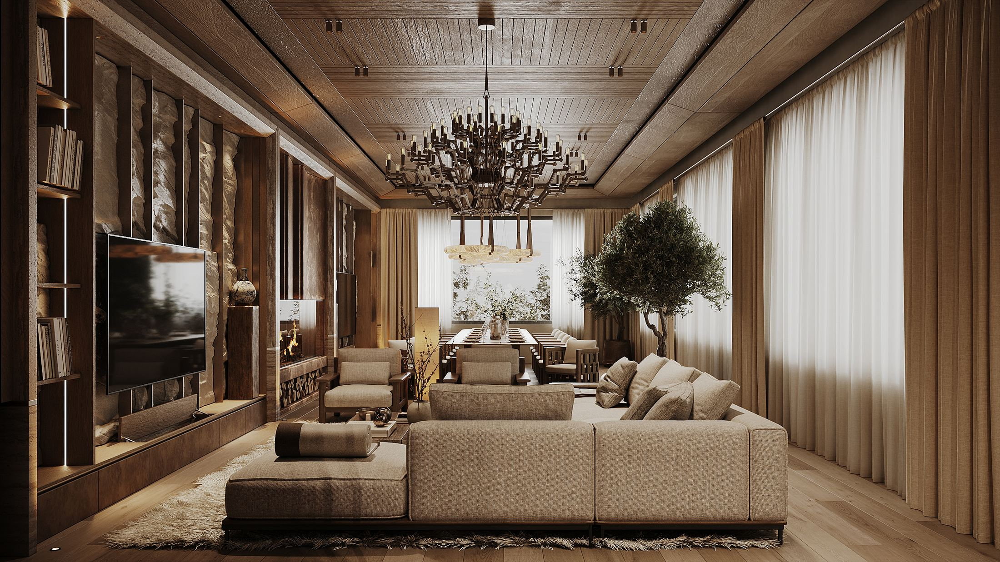
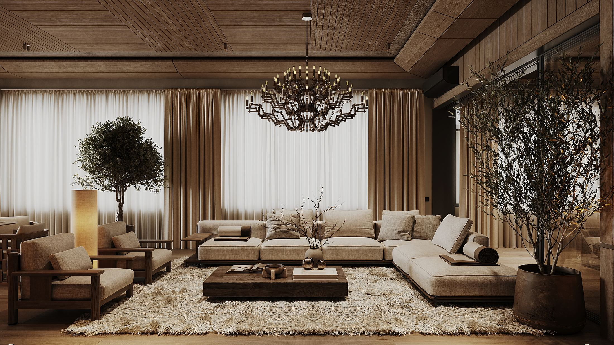
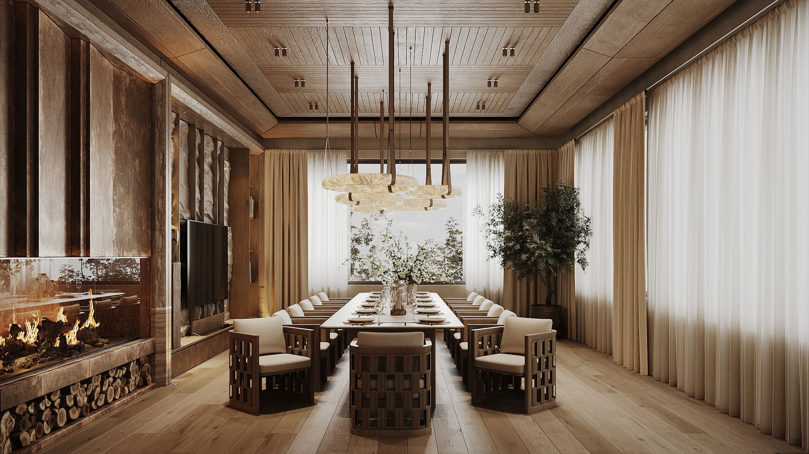
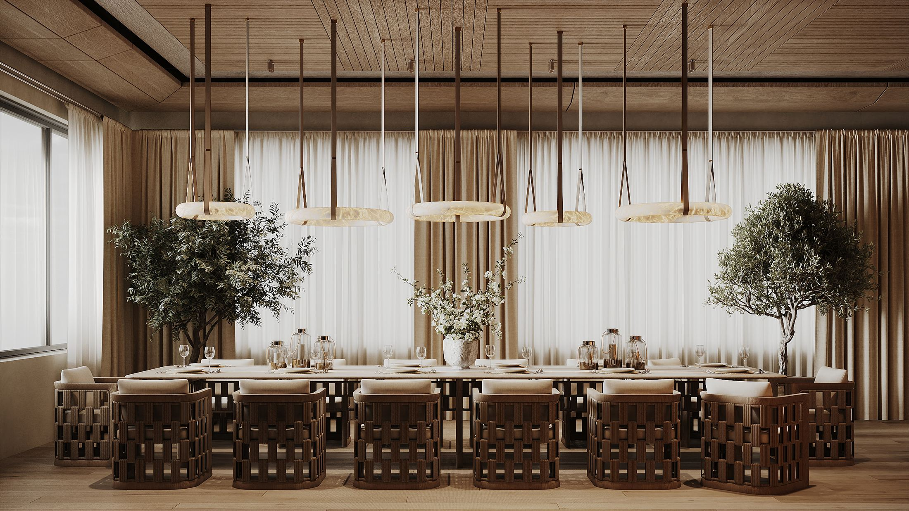
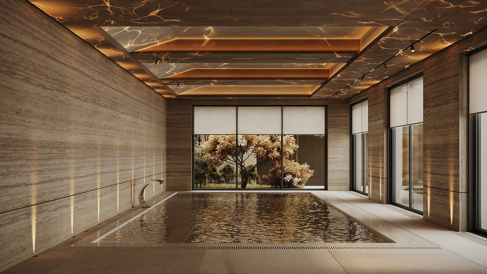
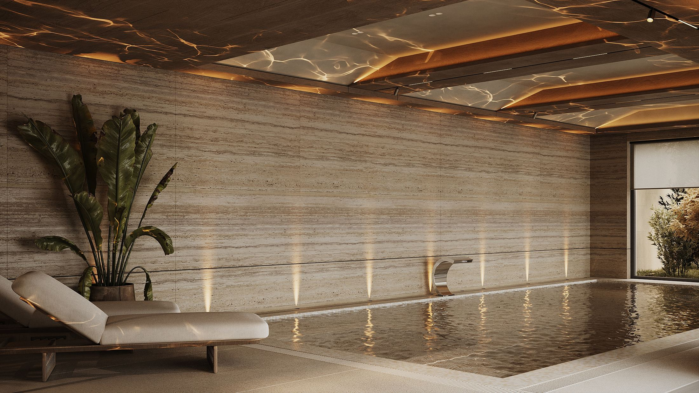
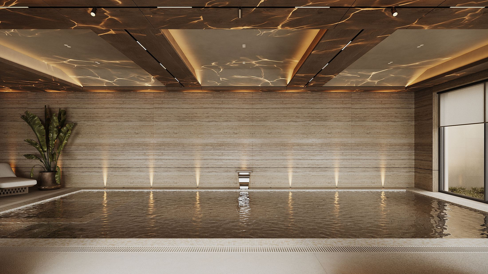
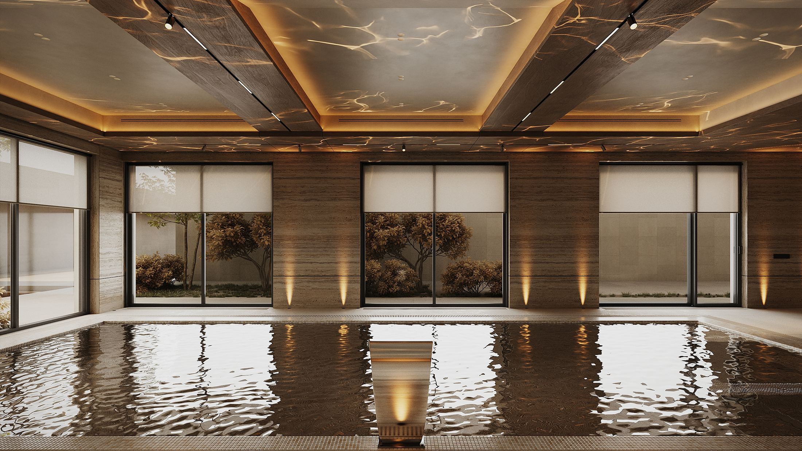
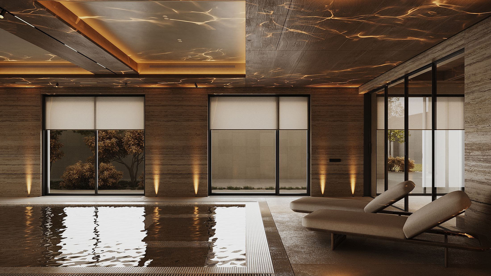
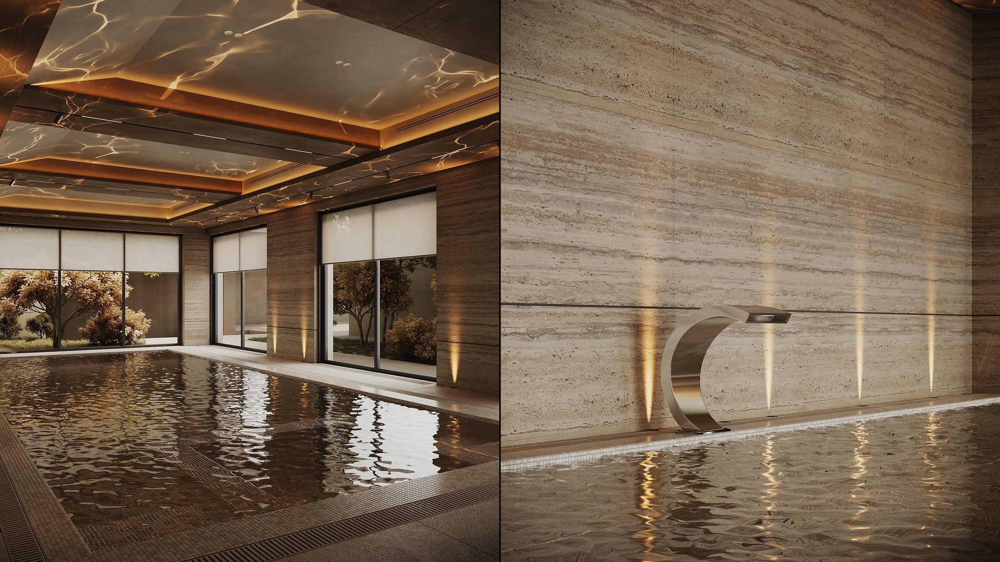
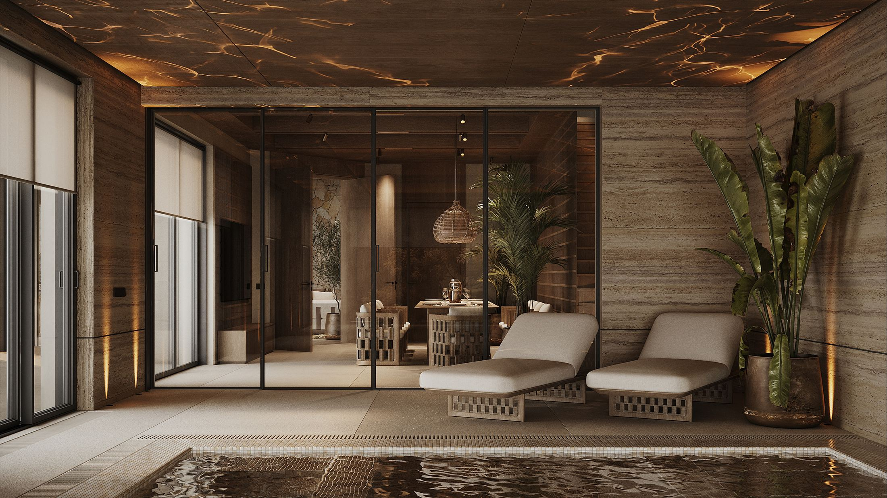
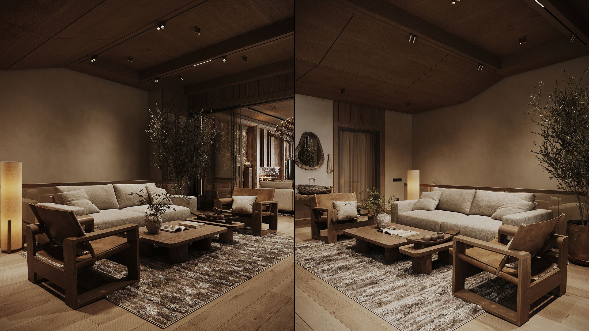
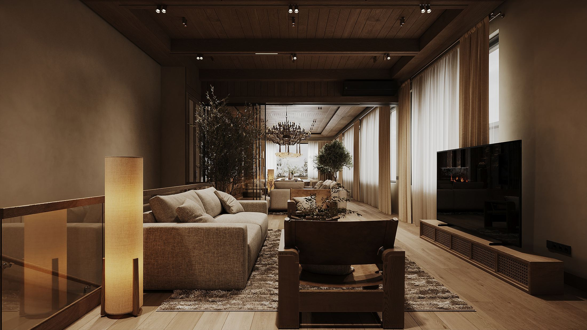
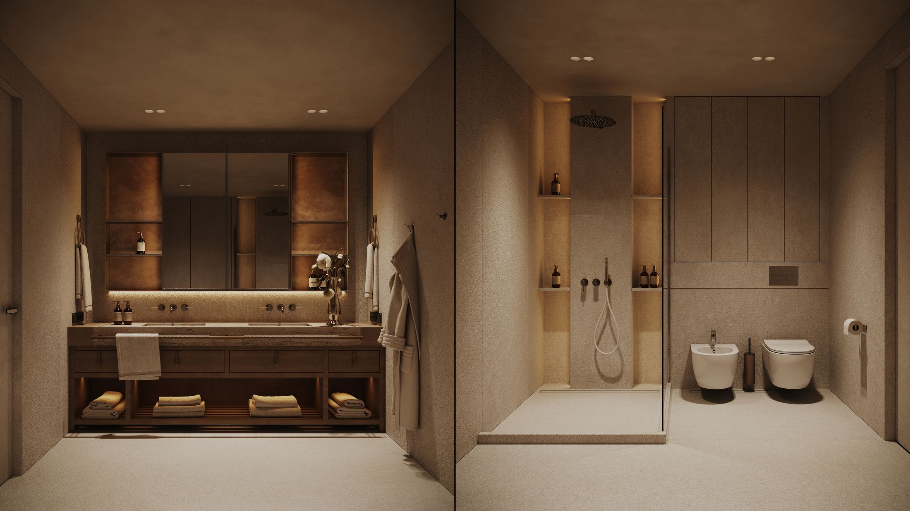
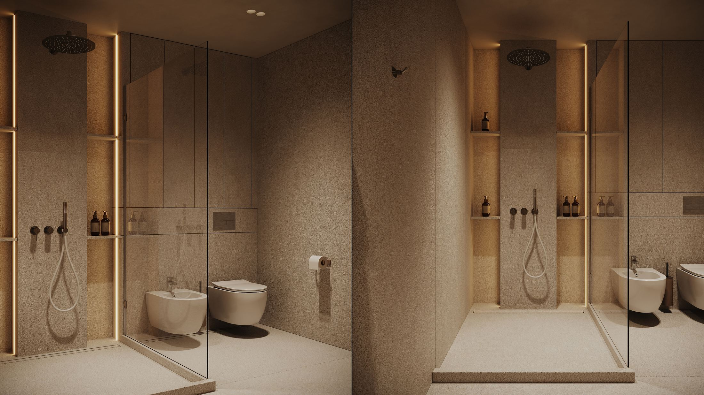
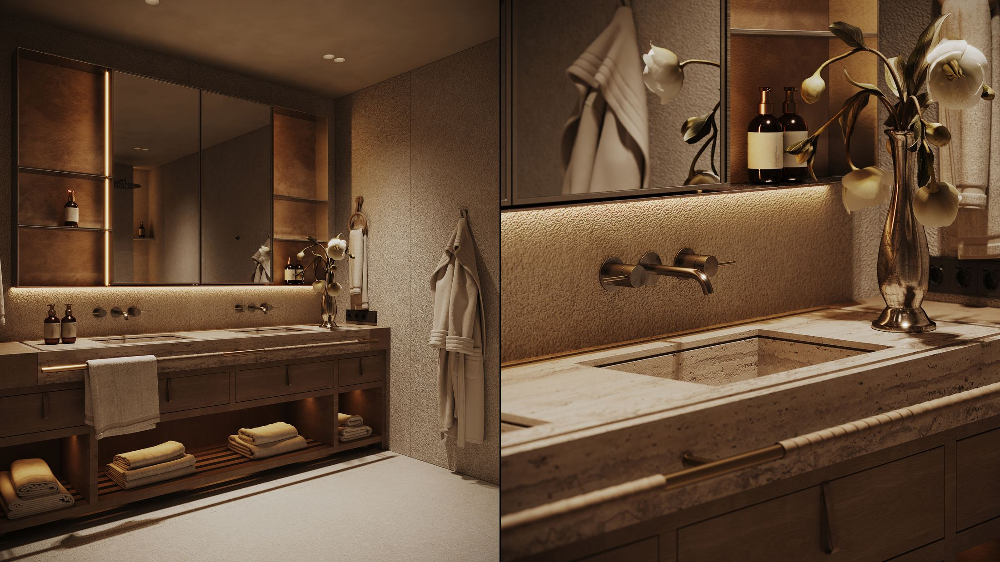
01 / 22